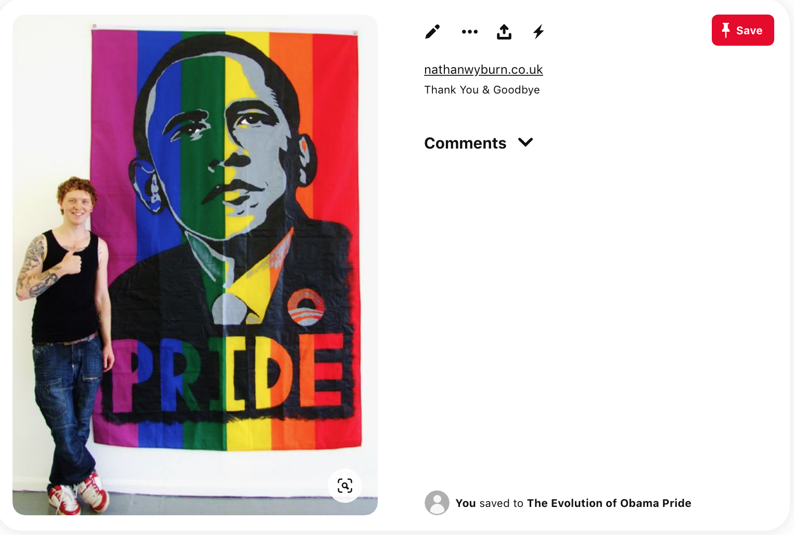

Pinning the Rainbow
In order to examine the parallel evolution of Obama Hope and Obama’s stance on same-sex marriage, I used Pinterest to collect, exhibit, and curate Obama Hope images related directly to same-sex marriage and LGBT rights. The board began on my personal account and appeared alongside my very normative boards which include recipes, hairstyles, and cute animals. However, to expand Pinterest's interface beyond consumer and aesthetic purposes and instead employ it for activist and academic means, I created a new account dedicated to this project and moved all the pins to a new board that can be accessed here.
After the board was set up, I collected images in several ways. First, I installed the Pinterest plug in my browser, which allowed me to pin images quickly and efficiently from any outside site. I then conducted searches for images related to Obama Hope and same-sex marriage on several sites including Google Image, Flicker, and Deviant Art. I also internally searched Pinterest for images that had already been pinned. One drawback to using Pinterest to archive images is that several images on Flicker were set to prevent sharing, which meant that the image was "unpinnable" and could not be included in the archive. One way around this would be to screenshot the image and upload that file onto the Pinterest board, but I ultimately decided against this practice, since sharing and privacy settings are determined by the person (presumably the creator) who posted the image. My Pinterest board is thus limited in its collection due to Internet privacy issues.
Figure 2. Screen shot of “The Evolution of Obama Pride” Pinterest Board.
Overall, however, Pinterest has several advantages for curating a digital collection of Obama Hope images related to same-sex marriage. First, the “Pinning” tool downloaded on one’s browser makes the process of collecting images fast and efficient. Second, in line with a queer archival agenda, hosting my archive on a public Pinterest board helps to propel the images into public circulation as well as potentially subvert the normative assumptions about how Pinterest should or shouldn’t be used. Pinterest especially makes visible how everyday citizens can use this platform to contribute to LGBTQ history. Third, the interface of Pinterest boards, which display visual artifacts in rows with little to no written commentary, affords easy contrast and comparison so that trends, patterns, and anomalies can be noticed and assist rhetorical analysis. For instance, the images in “The Evolution of Obama Pride” archive were specifically selected to reflect the evolution of Obama’s stance on same-sex marriage and the public response to this shifting position. In analyzing this selection of images on “The Evolution of Obama Pride” Pinterest board, one pattern that emerges is the explicit use of rainbow and other gay icons to both call out Obama's lack of support for same-sex marriage, as well as celebrate when his stance evolved. A rhetorical analysis of the rainbows in and across these documents complicates our understanding of how allies come to be represented and how straight people become appealed to the fight for same sex marriage.
The rainbow has a long history as a symbol used to identify and unite the LGBTQ community. The flag was designed by artist and Vietnam army vet Gilbert Baker at the request of Harvey Milk, who wanted the flag for the 1975 San Francisco Gay Pride Parade. In an interview, Baker stated that he wanted a symbol that would symbolize hope and convey a positive message for the community, rather than symbols of tragedy such as the pink triangle which marked gay men during the Holocaust (Morgan). In the years since its creation, the rainbow flag has become synonymous with the gay community, taking on iconic status. While the image has a rich history of being evoked by the LGB community, in recent years it has also become a marker of allyship. Organizations, business, and public figures who are not explicitly LGB invoke the rainbow to demonstrate that they support LGB causes and individuals. Examples of this include rainbow flag stickers on the windows of businesses indicating they welcome LGB patrons as well as Imagine Dragons lead singer Dan Reynolds draping a rainbow flag over his shoulders during a performance as a sign of solidarity and support for the LGBT community, despite identifying straight himself.
The Obama Hope artifacts using rainbow imagery that originated during Obama’s first campaign and his first years of presidency have a distinctly different flavor and are overwhelmingly critical of Obama and his lack of action in regard to same-sex marriage. As discussed in an earlier section, Obama Hope surfaced at many protests fighting for same-sex marriage. For example, at a New York rally opposing the California ban on same-sex marriage, signs featured a black and white image of Obama Hope on a rainbow background with the words, "Marriage is not a Privilege, It's a Civil Right"—most likely referring to Obama stating in an interview that "I don't think marriage is a civil right"—and “You Promised to Speak for All People…” referencing the expectations that Obama would better represent vulnerable populations than his predecessors (Dwyer). Other signs include the Obama Hope image in which “Hope” is replaced with “Marriage Equality, No Change” and “Change?” and the round Obama logo is altered to include a rainbow. The use of rainbows in these visual artifacts are not marking Obama as an ally to the LGB community; rather they are calling him out and shaming him for not aligning himself with the LGB community and their desires for recognition through the legalization of marriage. In 2009, for instance, several protest images featuring people holding large Obama Hope posters with the word “Hope” replaced by “Fail” and “Fraud” were present at a demonstration addressing Obama’s appearance at a May 2009 Democratic National Convention fundraiser in California. The demonstrators were upset that several months into his presidency Obama had yet to speak on issues pertaining to LGB population such as the Defense of Marriage Act and Don’t Ask, Don’t Tell (Queerty Staff). Despite being personally against same-sex marriage, Obama’s campaign platform promised LGB Americans that he would work to revoke these damaging pieces of legislation (CNN). Many LGB Americans felt frustrated that Obama had invoked these promises to win votes and that his continued silences on the issues indicated that he had little or no intention of following through. Thus, calling Obama a “failure” and a “fraud” marks him as a false ally to the LGB population.
Figure 3. Screen Shot of Pin Documenting Protest Posters featuring Obama Hope and Rainbows to Calling out Obama for his lack of Action in regard to Same-sex Marriage.
The circulation of Obama Hope image, the archive reveals, only increased after Obama publicly declared his support for same-sex marriage and the overturning of DOMA. Not only did circulation increase, but the use of rainbows shifts from a shaming to celebratory tone. In one photograph, a protester holds an original Obama Hope poster while another holds that same poster remixed with the words "Obama Pride" and a rainbow Obama logo. Such rainbow effect was common in Obama Hope remixes. One remix that was printed onto buttons, for instance, features a rainbow-colored Obama with the word "Pride" while in other remixes, "Hope" was replaced with words such as "Pride" and "Evolved." For example, one image in the archive features the iconic image of Obama used in Fairey’s Hope Poster spray painted onto a fabric rainbow flag (much like the ones that are extremely prevalent at pride parades and celebrations) with the word pride appearing at the bottom (see Figure 4). Additionally, "Progress," one of the original words used in Fairey’s designs, was used in a rainbow-colored Obama Hope remix. From a vantage point of allyship, the celebratory nature of these images is clearly hailing Obama as an ally and resource for the LGB community. In a post on the site “The LGBT Update” featuring a rainbow rendition of the Obama Hope image, creator and editor INAPQ states “During his term as our nation’s elected commander and chief, President Barack Obama has clearly become the most outspoken U.S. President to support LGBT rights proudly. So by no surprise, President Obama stands strong once again with our Lesbian, Gay, Bi and Trans community, by officially declaring June as LGBT Pride Month" (INAPQ). Much like the rainbow stickers placed on business doors welcoming LGB patrons and straight individuals who wish to support socially progressive businesses, painting Obama with the iconic symbolism of the rainbow associates him both with the LGBT community as well as marks him as socially progressive and forward thinking.
Figure 4. Screen shot of Pin Containing a Photo of the Obama Hope Image Spray Painted on a Flag with the word “Pride.”
It is important to consider the significance of the use of the rainbow to mark Obama as an ally to the community, rather than say images of Obama posing with actual gay and lesbian couples to signify Obama’s evolution of same-sex marriage. As Hairman and Lucaites claim, iconic images are important rhetorical vehicles that impact civic identities, attitudes, and actions, as they provide a means to both “read the public culture at any given period” and negotiate “basic attitudes toward policy” (381). In democratic public cultures such as the U.S., iconic images are able to do this work by appealing to citizen’s hope for freedom and equality—two values that are fundamental to civic notions of American citizenship. But iconic images can only do so if they do not also trigger other values that may counter those civic notions, a phenomenon that is especially important when it comes to the gay rights movement in which the depiction of same-sex couples can be risky rhetorical strategy for mainstream audiences. It has been found, for instance, that even those who don’t exhibit outwardly homophobic behaviors and attitudes become uncomfortable or may exhibit homophobic behaviors or attitudes when exposed to images depicting same sex romantic relationships as well as more explicit sexual acts (Bishop). This helps account for why advertisers often turn to abstract iconography rather than photographs of same sex couples. In their study examining gay-specific symbols in mainstream advertising, for instance, Oakenfull and Greenlee state “Use of implicit gay and lesbian imagery such as gay and lesbian iconography may allow marketers to effectively target the gay and lesbian consumers who will recognize the symbolism in the ad, while posing far less risk of offending heterosexual consumer” (423). When it comes to gay rights activism, this same principle applies. Thus, rather than showing Obama with actual depictions of same-sex relationships, which might trigger offense for some straight people, the rainbow is leaned on to trigger their ideals of equality and freedom (Hairman & Lucaites). In this way, the rainbow is able to both successfully speak to the LGB community and successfully appeal to the civic notions of Obama’s straight supporters.
The Rhetorical Undercuts of Obama Pride
While the rainbow colored “Evolution of Obama Pride” archive provides important contributions to queer rhetorical history, it is also important for digital visual historians to interrogate our own archival practices. We have an ethical obligation to acknowledge how our practice may contribute to oppressive ideologies and practices and potentially undercut our transformative ambitions. In order to explain this phenomenon, I'm offering the term rhetorical undercut. The term undercut refers to the ability to render unstable or undermine (Online Etymology Dictionary). Rhetorical undercuts render archives and their contents unstable by acknowledging the double play present in archival collections. By acknowledging the rhetorical undercuts of archival work, we are able to both acknowledge the problematic nature of archival materials and practices as well as their productive and representational properties. The following paragraphs exemplify how rhetorical undercuts operate within the “Evolution of Obama Pride” archive.
This Obama Hope archive could be read rhetorically in different ways, some positive for the queer community and some questionable. The early images are easily identifiable as rhetorics of resistance in regard to LGB individuals being denied citizenship and rights as humans. By using the Obama Hope image to call out Obama and his lack of active support, the creators and implementers of these artifacts ask to be treated equally by being included in the institution of marriage. However, in asking so, they uphold the heteronormative institution of marriage without critically examining the power dynamics and potentially problematic elements and history of marriage as an institution--a critique that was also forwarded about the Prop 8 movement on the whole: “Rather than move us towards a radical queering of citizenship, the No on 8 campaign reinvigorated a limited assimilationist identity politics celebrating conformity and alienating many in the very community it was purportedly fighting for” (Rohrer 115). The fight for and celebration of Obama’s recognition of same-sex marriage as a civil right in the production of Obama Hope remixes could thus been read as an example of Lisa Duggan’s new heteronormativity, “which does not contest dominant heteronormative assumptions and institutions but upholds and sustains them while promising the possibility of a demobilized gay constituency and privatized, depoliticized gay culture anchored in domesticity and consumption” (179). The images calling out Obama for his lack of support, as well as the later images that excitedly celebrate Obama’s “evolved” stance, encourage the embrace of same-sex marriage as the ultimate LGB battle and contribute to the assumption that all gay men and lesbian aspire to a nuclear family model of family building (Rohrer). In doing so, this archive could be read to uphold heteronormative ideologies in its efforts to build a queer rhetorical perspective into the visual artifacts of Obama's evolving stance toward same-sex marriage.
The “The Evolution of Obama Pride” archive also runs the risk of upholding the conflation between whiteness and gay and lesbian identities. In analyzing this archive, it becomes clear that while this archive makes visible those who supported and fought for same-sex marriage through the production of Obama Hope remixes in various protests, race is also erased. When the entire archive is viewed as a whole, there is a notable absence of Black bodies. Obama is the only Black person in all of the images, and he is often illustrated in the original red, white, and blue depiction that Fairey designed purposefully to erase Obama’s race to increase chances for identification among citizens of all races (Gries). Obama is also often colored with a rainbow effect. This coloring is clearly intended to signify Obama’s alliance with the LGBT community, but it perpetuates a post-racial representation of Obama that belies the complexities of being a black male in the United States today. In addition, a lack of black bodies is especially obvious in protest photos in which Obama Hope appears. In all the photos, white bodies are holding the signs calling out the Black president. This observation is only amplified by the affordances granted by Pinterest as an archival tool. When all of the images are placed next to each other with little or no written text, the presence of white bodies and absence of bodies of color is, in fact, glaring.
As an archive, the absence of bodies of color in association with Obama’s evolving stance on same-sex marriage risks upholding popular notions that the black community is more homophobic than its white counterparts. After the passage of Proposition 8, the black community was scapegoated for the bill’s passage in media reports. Initial reports claimed that 70 percent of black voters supported the passage of Prop 8, despite newer calculations placing the number closer to 58% (Coates). White, gay activists are guilty of vilifying the black religious community both during and after the passage of Prop 8 even though when church attendance was factored into the analysis of voting patterns during the 2008 elections, black voters did not differ from their white counterparts in regard to their support of same-sex marriage (Kaufman). The scapegoating of black voters in 2008 is yet another example of how blackness and LGB identities are often disentangled from each other. The “Evolution of Obama Pride” Pinterest board only contributes to such divorce in that the hyperpresence of white bodies calling out a black man for his lack of support for the LGB community erases the experiences of black and other people of color who also identify as part of the LGB community (Carbado).
Those of us using digital tools such as Pinterest to curate historical events thus must be aware of how the rhetorical undercuts present within our archives may reproduce moments of oppression or inequalities, despite our intentions to reveal or uncover forgotten histories. The emphasis on rainbow iconography and its associations with white (often cis-gendered gay men) members of the LGB community has ramifications that those of us curating these publicly available archives must contend with. One solution would be to broaden the parameters of the archive to explicitly seek out images and signs created by communities of color in response to Obama’s evolved stance on same-sex marriage.
Next Section